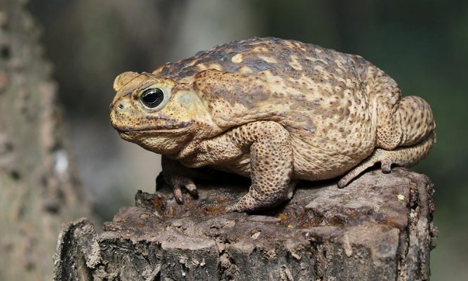

QUEM É O SAPO-CURURU?
Apesar do que dizem as más linguas, o querido Sapo-Cururu não vive apenas na beira do rio, ele tambem mora áreas úmidas, bordas de florestas, matas ciliares, campos alagados e áreas urbanas ou agrícolas na América do Sul e Central e ao contrario do que diz na musica "a mulher do sapo deve estar la dentro, fazendo rendinha o maninha para o casamento", os sapos Sapo-Cururu são seres predominantemente solitarios, eles não costumam andar em bandos para evitar predadores. E acreditem, os sapos não cantam porque estão com frio eles na verdade cantam para atrair fêmeas para o acasalamento.

- Nome comum: Sapo-cururu
- Nome científico: Rhinella marina
- Tipo: Anfíbio
- Dieta: Onívora
- Coletivo: Anuros
- Expectativa média de vida na natureza: Entre 5 e 10 anos
- Tamanho: Entre 10 e 15 centímetros
- Peso: Aproximadamente 1,3 quilo
Mais Informações sobre essa espécie

Reprodução
Eles se reproduzem em quase qualquer época do ano e depositam entre oito mil e 30 mil ovos por vez em longos filamentos na água doce. Os ovos e os girinos também são venenosos. Têm alta capacidade de adaptação e podem ser encontrados em áreas urbanas e rurais, bem como em dunas, prados costeiros e bordas de florestas tropicais e manguezais.
Toxicidade
Os sapos-cururu secretam um veneno leitoso pelas glândulas parótidas localizadas atrás dos ombros. O veneno, denominado bufotoxina, contém diversas substâncias químicas, como bufagina, que afeta o coração, e bufotenina, um alucinógeno.